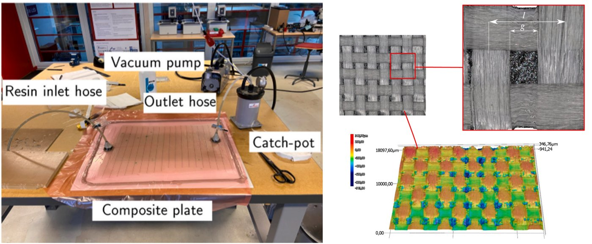

Research / Fibre & laminated composites
Fibre & laminated composites
Fibre-reinforced and laminated materials: how they fail, how long they last, and how to design and manufacture them across scales.
Fibre-reinforced and layered materials offer high specific stiffness and strength, but they are often weak between layers. Damage can grow in unstable ways, and properties vary because of flaws introduced during processing.
We study interlaminar fracture, durability and multiscale behaviour of composites, from fibre–matrix interfaces to components. Increasingly, we work with new manufacturing routes such as continuous-fibre printing and selective laser sintering, and with recycled and bio-based constituents.
Topics
- Interlaminar fracture and delamination
- Fibre–matrix interface debonding
- Moisture diffusion and durability
- Multiscale modelling (homogenisation, phase field)
- Additive manufacturing: continuous fibre, SLS
- Hybrid, recycled and bio-based composites

Crossroads
With mechanical metamaterials →
Architecture can be built into laminates themselves. For example, kirigami-inspired cuts widen the crack front and make delamination deliberately intermittent, and patterned interlayers tune delamination resistance through geometry alone.
- 2026P. Hu, M.K. BudzikDesigned intermittency in interlaminar fracture via kirigami-induced crack-front widening, Comp. Sci. Technol. 279, 111611 (2026).
- 2024P. Hu, M.A. Dias, M.K. BudzikGeometric tunability of delamination resistance, Comp. Part B 287, 111839 (2024).
How cracks start, grow and stop, under single loads, repeated loads (fatigue) and over a structure's service life, is the common thread through all three fields. We study it with analytical models, numerical methods, including finite element and phase field models of fracture, and experiments. A new Carlsberg Foundation platform for fatigue testing and fatigue-driven materials design supports this work.
Related projects
- LIFE FIBRA: Circularity and resilience in forest-based value chainsEU LIFE
- HexCircle: Heat-exchanger components for resilient and circular productionInnovation Fund Denmark Industrial PhD · Vestas Aircoil
- HyFly: Hybrid glass–carbon fibre flywheels for energy storageInnovation Fund Denmark Grand Solutions
- Platform for fatigue testing and fatigue-driven materials designCarlsberg Foundation
Key papers
- 2026S.S. Wahlgren, H. Myhre Jensen, M.K. BudzikOn the transition from arc debonding to tunneling at fiber-matrix interfaces, Comp. Part B, 113624 (2026).
- 2025J. Hasselvig, R.T. Nygaard, M.K. Budzik, M. SandbergEfficient continuum-based modelling and analysis of polymer SLS: Insights into particle sintering and densification in straight and corner scanning passes, Addit. Manuf. 109, 104828 (2025).
- 2024B.U. Bokharaie, R. Aghababaei, M.A. Dias, M.K. BudzikFailure of 3D-Printed Composite Continuous Carbon Fiber Hexagonal Frames, Comp. Part B 275, 111307 (2024).
- 2022S. Rao, M.K. Budzik, M.A. DiasOn microscopic fracture analysis of unidirectional composite material using Phase Field Modelling, Comp. Sci. Technol. 220, 109242 (2022).
- 2022S. Heide-Jørgensen, M.K. Budzik, C. IbsenThree-dimensional, multiscale homogenization for hybrid woven composites with fiber-matrix debonding, Comp. Sci. Technol. 218, 109204 (2022).
- 2021S. Heide-Jørgensen, C. Ibsen, M.K. BudzikTemperature dependence of moisture diffusion in woven epoxy-glass composites: A theoretical and experimental study, Materials Today Communications 29, 102844 (2021).
Related
Adhesive bonding
Adhesion from surface to structure: how adhesives wet, cure and age, how surface chemistry and geometry control a bond, and how joints perform and fail.
Explore →Mechanical metamaterials
Materials whose behaviour comes from architecture rather than composition: lattices, cut and folded sheets, foams, and natural architected materials such as bone.
Explore →Architected interfaces
Putting architecture into the interface itself: geometry that guides cracks, separates strength from toughness, and lets bonded structures be taken apart.
Explore →